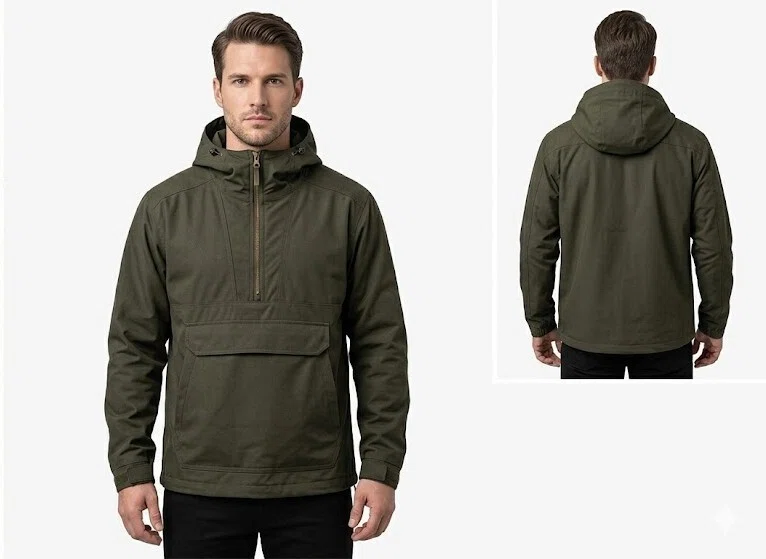

「アノラック（anorak）」という衣服をご存じだろうか。

フード付きのジャケットのことで、その防寒性や防水性からアウトドアに重宝されている。また、ストリートファッションとして着用する人も少なくない。
ただ、「アノラック」という呼び方自体はあまり一般的ではなくなっているかもしれない。「パーカー」や「ウインドブレーカー」と言った方が通じるだろう。
このアノラック、イギリスでは防寒着としてだけでなく、人を指す言葉として日常的に用いられている。
イギリスのスラングで 「anorak」 は、大雑把にまとめれば「オタク」を意味する。特定の趣味や関心事に異常なほど没頭する人を指す言葉だ。
He's a real anorak when it comes to football statistics.（彼はサッカーの統計データに関しては完全なオタクだ）
I never knew how much of an anorak you were about classic movies.（君がそんなクラシック映画マニアだったとは知らなかったよ）
ところで、なぜ防寒着がオタクなのだろうか？
その経緯をたどると、北極圏の狩猟民からイギリスの海賊ラジオ、また、鉄道文化へとつながる数奇な物語が見えてくる。
北極圏からイギリスへ
「anorak」の語源は、グリーンランド・イヌイット語の「annoraaq」だ。
アザラシの皮などで作られた、北極圏の防水・防寒用のフード付き衣服を指す言葉である。
この語が英語圏に広まるきっかけとなったのは、19世紀末の極地探検だ。
ノルウェーの探検家フリチョフ・ナンセンがグリーンランドのイヌイットの生活を記録した著作を通じて、「anorak」という語はヨーロッパの言語に入った。
1930年代には、イギリスでも西洋風のアノラックが一般に普及し、登山やアウトドア活動の定番となっていく。
ここまでは、単なる衣服の話だ。「anorak」が「オタク」を意味するようになるには、もう少し時間がかかる。
海賊ラジオとアノラック
スラングとしての「anorak」の起源には、意外な人物がかかわっている。1960〜70年代にイギリス沖で活動していた海賊ラジオ局のDJ、Andy Archerだ。
当時のイギリスでは、BBCがラジオ放送をほぼ独占していた。ポップミュージックを自由に流す放送局を求めて、「Radio Caroline」などの海賊ラジオ局が北海に船を浮かべて放送していたのだ。
熱心なファンのなかには、わざわざ船をチャーターして沖合のラジオ船を訪れる者もいた。
1973年の夏、オランダ沖のRadio Caroline船「Mi Amigo」を訪問するファンの一団を船上から見たAndy Archerは、真夏にもかかわらずアノラックを着込んだ彼らの姿を見て、放送中に「all the anoraks」と呼び、彼らに感謝の意を述べた。
これがスラングとしての「anorak」の始まりとされている。
1983年には「Anoraks UK Weekly Report」という海賊ラジオ専門のニュースレターが創刊されるなど、「anorak＝マニアックなファン」という用法は海賊ラジオの愛好家コミュニティで定着していった。
トレインスポッターとアノラック
「anorak」が海賊ラジオの世界を超えて広く使われるようになったのは、1984年のことだ。
オブザーバー紙（The Observer、1791年創刊の世界最古の日曜新聞）が、トレインスポッター（鉄道マニア）の代名詞としてこの語を使ったのである。
「Trainspotting（トレインスポッティング）」とは、駅や線路脇に立ち、通過する機関車の車両番号をノートに記録していく趣味だ。
日本の撮り鉄に近いが、写真を撮るのではなく、番号を記録して「見た車両リスト」を埋めていくことに主眼がある。
この趣味に火をつけたのが、Ian Allanという人物だ。
1942年、サザン鉄道の広報部で働いていた彼は、一般からの車両情報の問い合わせに効率的に対応するため、機関車の番号・名前・クラス・配置先を一冊にまとめた小冊子『ABC of Southern Locomotives』を自費出版した。
これが爆発的に売れた。
戦後の物資が乏しい時代、ノートと鉛筆さえあれば誰でも始められるこの趣味は、イギリスの少年たちの間で大流行したのだった。
当時、駅のプラットフォームには、この小冊子を片手に列車を待つ少年たちの姿があふれていたそうだ。
雨でも風でも線路脇に立って列車を待っている、そんな彼らが着ていたのが、安価で実用的なアノラックだったのである。
ファッション性など無縁の実用本位の防水ジャケットを着込んだ彼らの姿は、趣味に没頭するあまり外見に無頓着な人物の象徴となった。
海賊ラジオのファンに端を発した「anorak」という呼び名は、こうしてトレインスポッターに当てはめられ、やがて鉄道に限らず、あらゆるジャンルのオタクを指す汎用的なスラングへと広がっていったのである。
ダニー・ボイルの『トレインスポッティング』
ところで、「トレインスポッティング」と聞くと、1996年のダニー・ボイル監督の映画を思い浮かべる人もいるだろう。
日本でもヒットした作品だが、内容は鉄道趣味とはまったく関係ない。エディンバラのヘロイン中毒者たちの退廃的な日常を描いた物語だ。
では、なぜこのタイトルなのだろう。
映画の原作者アーヴィン・ウェルシュによると、彼の地元エディンバラでは、鉄道の操車場でヘロインを打つ行為を「trainspotting」と呼んでいたという。それと、「些末なことに没頭すること」という上記の意味を掛けたタイトルのようだ。
「オタク」と「anorak」
最後に、日本語の「オタク」との違いに少しだけ触れておきたい。
「オタク」の語源は、相手を呼ぶときの「お宅」だ。互いを「お宅は〜」と呼び合うコミュニケーションの様式から来ている。
つまり、「どう呼び合っていたか」が由来である。
一方、「anorak」は「どう見えていたか」が由来だ。
ダサい防水ジャケットを着て雨のなかに立っている外見。呼び方ではなく、見た目の印象から生まれた言葉なのだ。
どちらも「趣味に没頭する人」を指すスラングだが、その着眼点が違うのはおもしろい。
参考
- anorak, Merriam-Webster
- Anorak (slang), Wikipedia
- Origin of 'Anorak', Offshore Radio Museum
- ANORAKS UK WEEKLY REPORTS, DX Archive
- The ABC of trainspotting literature, National Railway Museum blog